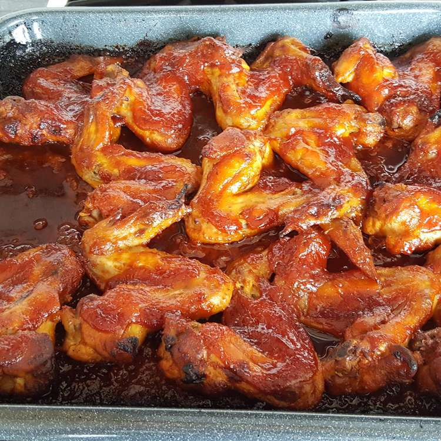

BBQ Chicken Recipe

This is homemade barbeque sauce cooked over chicken without the grill!
Ingredients!
- 10 chicken wings
- 3 tablespoons butter
- 1 tablespoon onion powder
- 5 tablespoons brown sugar
- 2 tablespoons Worcestershire sauce
- 1 cup ketchup
- 1/2 cup water
- 2 tablespoons prepared mustard
Steps!
- Preheat oven to 425 degrees F (220 degrees C).
- In a small saucepan, melt butter or margarine. Add onion powder, sugar, Worcestershire sauce and mustard; mix well.
Dilute ketchup with water and add to saucepan mixture. Let simmer for 15 minutes.
- Place chicken wings in a 9x13 inch baking dish. Pour saucepan mixture over chicken.
Bake, uncovered, in the preheated oven for about 45 minutes.